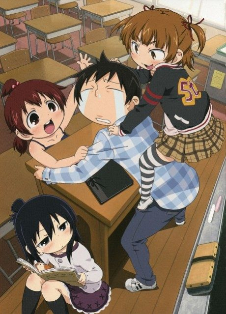

Mitsudomoe
みつどもえ
We haven't found where the anime ends in the manga yet.
7.1AniList score
—Animeter, no votes yet
21episodes, 2 seasons
2 seasons, 21 episodes
In airing order. Episode numbers on this site count straight through every season, so season 2 starts at episode 14.
1
2010 · TV
Mitsudomoe
Episodes1–1313 ep
2
2011 · TV
Mitsudomoe Zouryouchuu!
Episodes14–218 ep
Sources: AniList